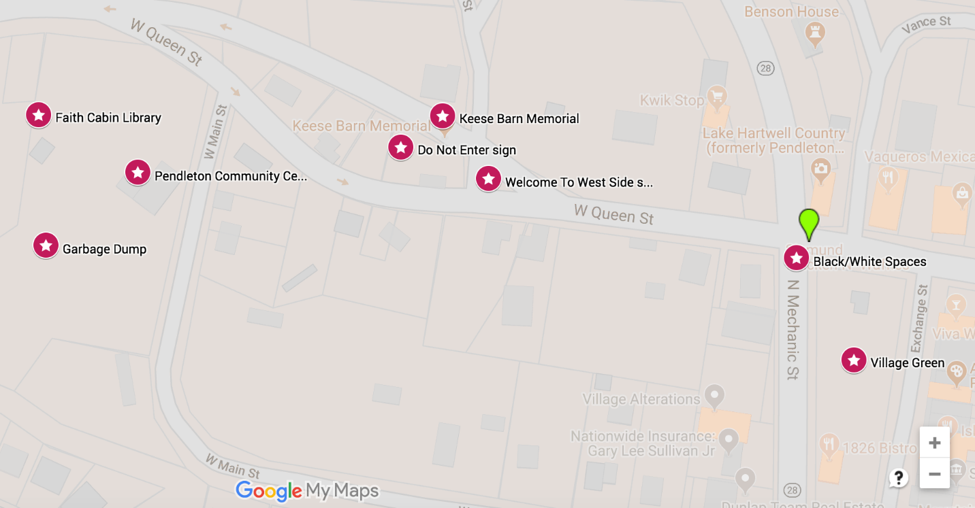
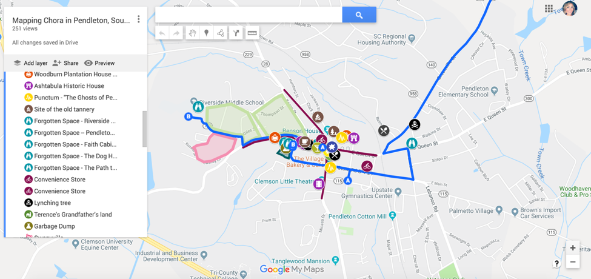
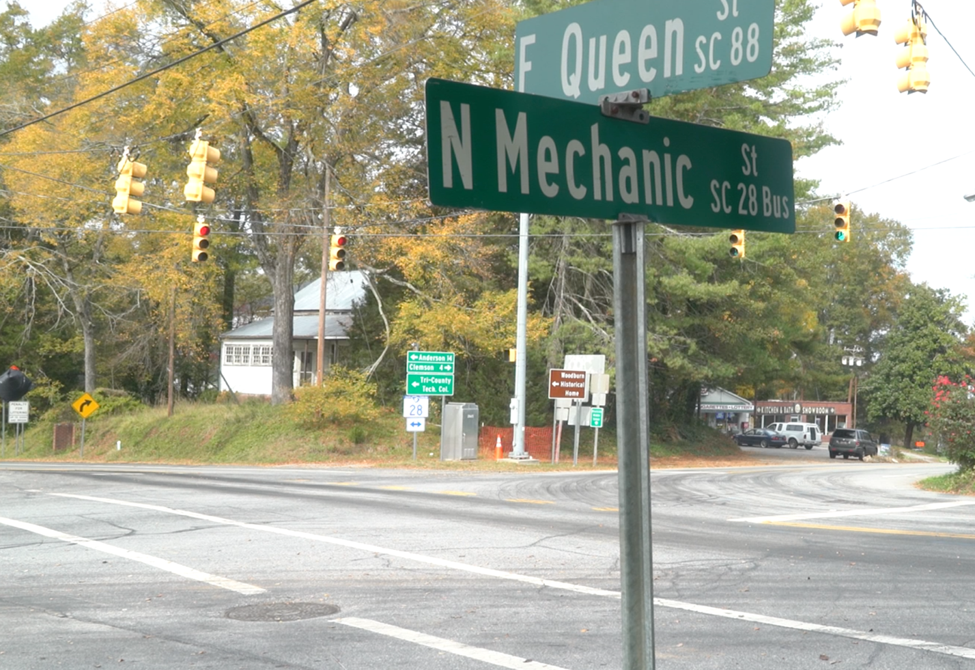
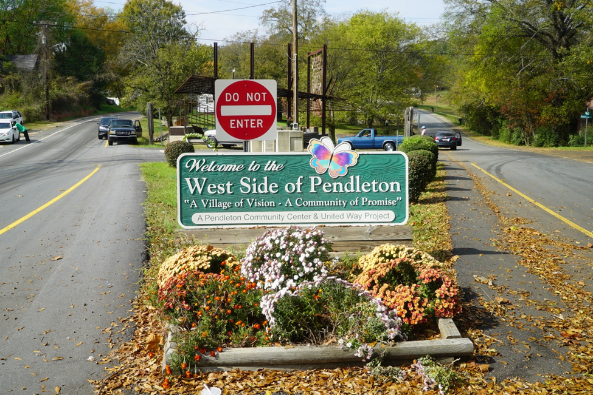
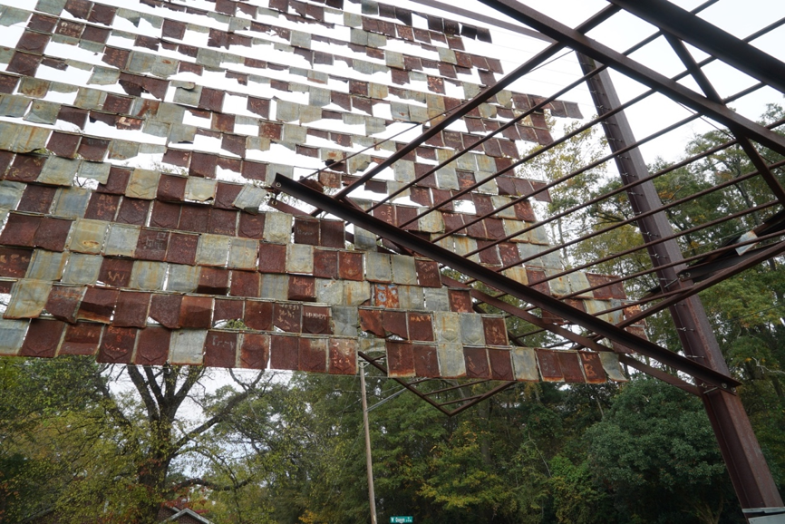
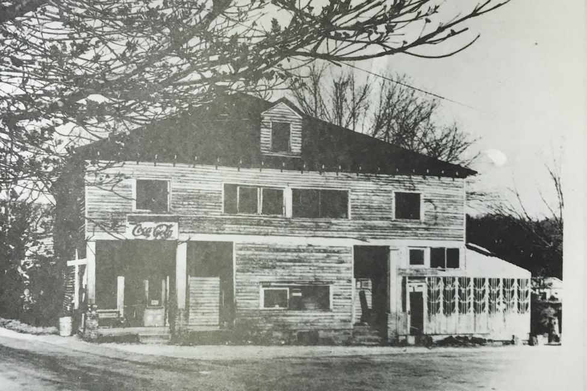
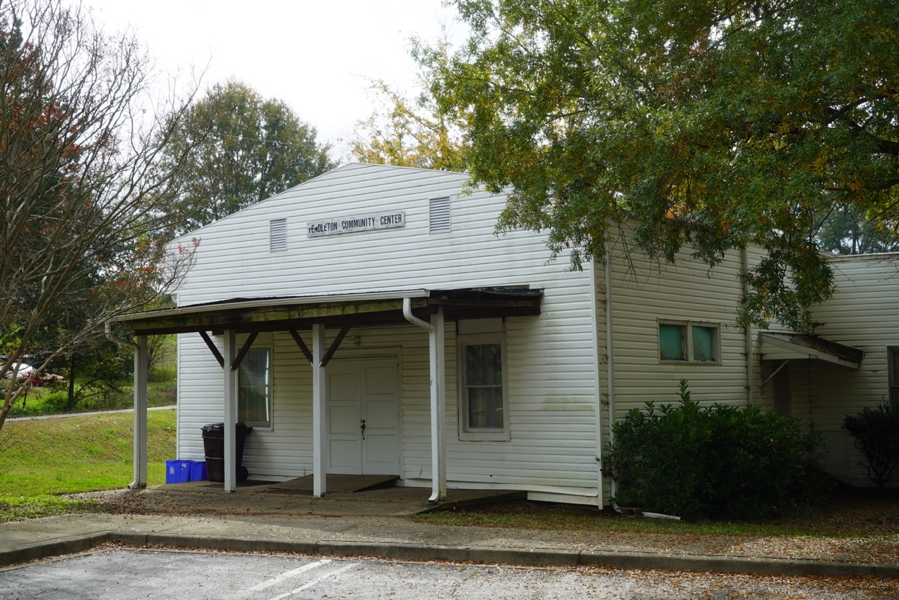
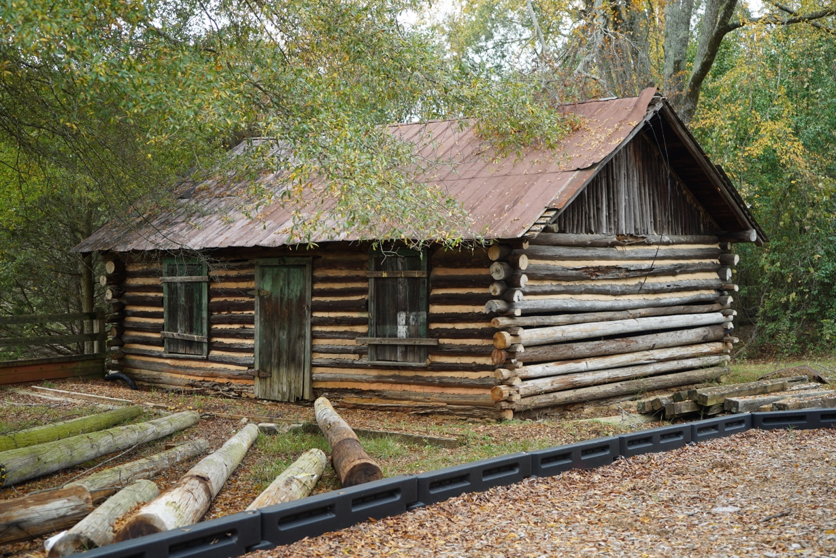
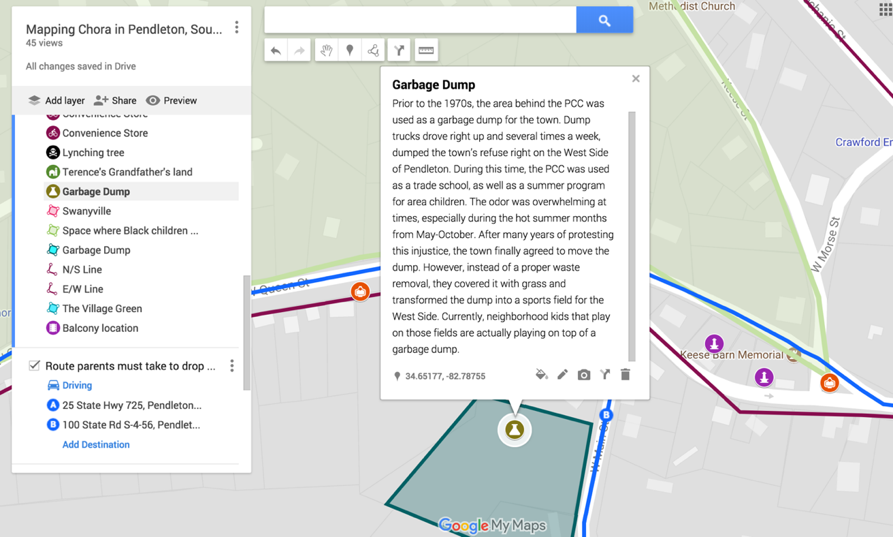

(Digital) Objects with Thing-Power: A New Materialist Perspective of Spaces, Places, and Public Memory
April O'Brien
Sam Houston State University
(Published February xx, 2020)
(Digital) Objects with Thing-Power: A New Materialist Perspective of Spaces, Places, and Public Memory
“The story will highlight the extent to which human being and thinghood overlap, the extent to which the us and the it slip-slide into each other.” - Jane Bennett, Vibrant Matter
Introduction
In his argument that maintains the role of artifacts in sociotechnical systems, Nathaniel Rivers argues that we cannot study publics without taking nonhuman actants into consideration. Rivers states, “It is vital to the study of public rhetoric that we attend to the vibrancy of nonhumans as they shape collective life […] Publics are emergent; they cannot be traced with a narrow, a priori definition of who or what constitutes a public” (Rivers, “Tracing”). Rivers’ work, along with others, represent a more recent turn in rhetoric and composition/writing studies and related fields to study nonhuman influences on the construction of public identities (Latour; Bogost; Bennett; Barnett and Boyle; Boyle; Gries; Rickert, Ambient Rhetoric). This research has been quite diverse, covering everything from the evolution and transformation of the Obama Hope image (Gries), to the role of object-oriented ontologies in computer programming (Bogost), to more holistic concerns about breaking down the dualism between humans and things (Latour). This movement towards considering our deep relationality and entanglement with nonhuman things is not simply a concern for rhetoric and composition/writing studies either, evidenced in the range of scholarship in philosophy, game studies, anthropology, and geography. However, it is evident that more and more scholars within RC/WS are turning toward posthumanism, new materialism, and vibrancy for their scholarly practices. Alongside this nonhuman turn, other scholars, like myself, have focused more specifically on the relationship of things, space and place, and memory (Jeff Rice; Jones and Greene; Boyle and Jenny Rice). These works, while distinct in scope and purpose, share a similar thread that examines the relationship between things, space and place, and memory, which distinguishes their work from other new materialist rhetorics.
In this article, I examine how a new materialist perspective can strengthen how we study public memory and spaces and places. I extend Propen’s visual-materialist rhetorical analysis to racialized sites in the American South and use a small Southern town as a case study. Pendleton, located in the upstate of South Carolina, is a historic, 228-year-old town known for its identity of “History – Hospitality – Happenings.” Within the town’s limits are two plantation houses, countless other historic structures, and, throughout the year, Pendleton hosts various social events in and around the town square and the plantation houses. However, in pursuit of its identity as a friendly, historic town, it erases or ignores its rich Black history and valorizes problematic white events and individuals. In the town’s public discourses, evidenced in physical space and places and objects like marker texts, memorials, plantation houses, and tourism pieces, a hegemonic settler-colonial narrative is depicted that marginalizes indigenous and Black histories.1 Whether via the construction of an unwanted memorial in place of a landmark African American building, the countless unmarked space and places, or marker texts that relay false histories, many of Pendleton’s space and objects invite deeper introspection. In this article, I examine how the town’s hegemonic narrative is conveyed through new materialist rhetorics and use non-discursive objects (memorials, monuments, buildings, as well as spaces and places that are not recognized in Pendleton’s public memory) to study these relationships. The nonhuman participants within the town’s networked discourse are inherently persuasive, and these things disrupt the narrative by reminding visitors and residents of traces of another history that has been othered.
Along with scholarship in space/place, this article engages with the rhetoric of memorials, a growing sub-discipline that has addressed the materiality of public memory, as well as the rhetorical influence of monuments and memorials in the public sphere. Greg Dickinson, Carole Blair, and Brian Ott’s edited collection, Places of Public Memory, establishes a relationship between the “rhetorical consequentiality of memory.” Similarly, Blair’s “Contemporary U.S. Sites as Exemplars of Rhetoric’s Materiality,” crafts an argument that links space, place, memory, and materiality that Amy Propen takes up later in her book, Locating Visual-Material Rhetorics. In Propen’s text, she argues for a joining of visual and material rhetorics in her examination of “the mill, the map, and the GPS,” and in doing so, blurs the lines between discursive and non-discursive rhetorics, a movement that particularly informs my examination of text-based marker texts as well as non-discursive memorials and other unmarked memory sites. Dickinson, Ott, and Aoki’s article, “Spaces of Remembering and Forgetting,” also establishes an important conversation about the misuse of memory sites, particularly how these sites function to absolves white Americans from their part in settler colonialism. Because I focus exclusively on Southern memory sites, I turn to James Chase Sanchez’s and Kristen Moore’s “Reappropriating Public Memory,” which uses the vandalism of a Confederate monument in Charleston as an exemplar for a larger conversation about the rhetoric of racism and Southern memory sites. All together, these intersecting threads inform the way the I study the material spaces, monuments, and memorials in Pendleton, South Carolina.
According to Laurie Gries, new materialism is “an emergent interdisciplinary theory […] part of a nonhuman turn” that challenges modernist dualism (4-5). Instead of viewing humans on one side of a sphere and things on the other side, new materialism argues for an “ontological hybridity” of human and nonhuman actors (5). Likewise, Jane Bennett contends that we consider “vibrant materiality” in place of the dualism that we usually cling to regarding humans versus nonhumans. Gries writes, “I want to highlight what is typically cast in the shadow: the material agency of effectivity or nonhuman of not-quite-human things” (ix). This article does not argue in favor of a flat ontology or even broach arguments about the primacy of nonhuman actants; rather, it refocuses our attention on things and attends to the relationship between humans and nonhumans. When we study spaces and/or places of public memory, we sometimes overlook the persuasiveness of nonhuman actants—which, in the case of Pendleton, include a variety of textual examples and non-discursive objects like historical markers, a rusty structure, the Pendleton Historic Foundation, restaurants, plantation houses, and the Pendleton Foundation for Black History and Culture—within the rhetorical ecologies (Edbauer). However, the vibrancy of material objects like Keese Barn Memorial, a rusty metal structure that stands “in memory”2 of a booming African American store and café, are overlooked in the midst of fall festivals, ghost tours, and soirees at Woodburn Historical Home, a plantation house. These objects, sites, and spaces and places engender Bennett’s notion of thing-power, which is “. . . the curious ability of inanimate things to animate, to act, to produce effects dramatic and subtle” (6). I seek to highlight the influence and effect of Pendleton’s things— things that make claims to knowledge about what aspects of Pendleton’s histories will be remembered and circulated to the public. As Propen writes, “[O]ur perception of visual and material artifacts and the interpretations that such artifacts help foster can have varied consequences not only on our understandings of history but also on our individual, lived experiences and for broader societal issues such as legislation and policy-making” (xvi). Memory sites not only convey a version of history, but they continue to impact the way we relate those historical memories to current policies.
In this article, I want to take up this challenge to explore what new materialism can do for space and place and memory studies, while using Geographic Information Systems (GIS) as a method to merge these digital and nondigital materialities. I make several moves toward that argument: First, I situate Pendleton’s memory problem in terms of how it performs its town motto of “History—Hospitality—Happenings.” Secondly, I use Google Maps to describe and analyze the space and places and objects in Pendleton that are a part of the town’s rhetorical ecology and determine their relationship to/with the town’s public narrative. Since these space and places and objects are also related to the town’s public memory, I consider the contributions of nonhuman participants to the West Side of Pendleton’s larger assemblage that includes racial residential lines, traffic and welcome signs, a memorial, and other buildings and landscapes. Ultimately, I discuss how race, place, and public memory is dramatized in these nondiscursive texts and explore future implications for new materialism in space/place and public memory research.
Mis/taken Identity
Pendleton, South Carolina is located in the upstate, sandwiched between the Blue Ridge Mountains to the north and the Savannah River Basin to the south. A small, rural town, Pendleton was colonized in 1790 after taking the land from the Cherokee nation. In what follows, I introduce Pendleton’s motto of “History—Hospitality—Happenings” as it relates to historical markers, residential segregation, and tourism. While I have chosen to separate these areas, they are intrinsically interrelated. For example, Pendleton’s “History,” as seen through its historic markers, is also representative of “Happenings,” or what events are considered a part of public memory.
While there are many ways that historical rhetoric circulates in the public sphere, in the American South, one of the most polarizing and influential forms is via marker texts. As James Loewen writes, “All across America, the landscape suffers from amnesia,” an issue that is
obvious in the way Pendleton remembers its history (4). I purposely use the singular of history because Pendleton does not relay histories but rather a single history, a history that focus on white men. Pendleton supplies a “condensed tour” of the town’s origins, the role of slavery in the town’s formation and advancement, sharecropping, Jim Crow, and segregation. In fact, the town suffers from amnesia, an amnesia that is disseminated to residents and visitors alike. At the “historical homes,” Woodburn or Ashtabula, visitors are recounted romanticized stories about the lives of the wealthy owners of the estates – it’s not uncommon, in fact, for people to sigh during tours 3. In an effort to reinforce a positive reception from visitors, the Pendleton Historic Foundation continues to rehearse stories of wealthy white homeowners, so there is little discussion of slavery or of Black history during the tours.
The Deep South is rather famously known for its hospitality—its wide, welcoming verandas, and a glass of sweet tea for visitors—and Pendleton, South Carolina capitalizes on this rhetoric of hospitality. As previously stated, these three areas of Pendleton’s motto are related—Pendleton’s sense of hospitality is linked to its history and its happenings. While the town appears hospitable via its welcoming Village Green, seasonal town festivals and events, and cheery banners, beneath this shiny veneer are larger questions about to whom hospitality is extended and to whom it is withheld. Specifically, I focus on what David Sibley calls “geographies of exclusion” (3), which is a kind of socio-spatial exclusion, via residential segregation. Although there are some white residents who live on the West Side of Pendleton and some Black residents who live outside the West Side, the town is obviously segregated. The majority of people of color live north and west of the town square on the west side of Mechanic Street and the North side of Queen Street 4. White residents spend little time on the West Side of Pendleton. The only exception is twice daily, when white residents must drive through the West Side of Pendleton to drop their children off at the local middle school 5. If we consider how outdoor public space is used, white residents frequent the Village Green in the center of town and Black residents converge beneath Keese Barn Memorial (the rusty metal memorial) on the West Side. The borders that I describe are borders that are invisible yet unmistakable. There are no explicit laws in South Carolina that prevent Black residents from crossing these borders; however, areas outside of the West Side of Pendleton are not friendly spaces for Black residents. In her essay, “Homeplace: A Site of Resistance,” bell hooks compares the fear that she experienced as she traveled through the white spaces in town in relation to the sense of safety that she felt when she arrived at her grandmother’s home. hooks’s description is echoed by West Side residents who describe feeling unwanted, unwelcome, and, in some cases, unsafe if they traveled outside the town’s “Black boundaries” (Hassan; Gantt).
In addition, the way the town uses its resources further separates white and Black residents and the corresponding white and Black spaces. During the winter holidays, the Village Green is decorated with lights and other festive things; there is also an annual tree-lighting ceremony in the center of town. All through the holiday season, a large Christmas tree adorns the center of town. It is safe to say that there are no town-wide events that are sponsored by the town of Pendleton and located on the West Side of town. Similarly, the town recently approved $500,000 improvement project (“Town Projects”). These improvements, including new roads, sidewalks, and storefronts, are all located in the center of town. None of this money has been allocated to improve the aging Pendleton Community Center or for the creation of a park near the metal memorial—both located on the West Side (“Town Projects;” Hassan; Gantt). Where are the safe and unsafe spaces in Pendleton, according to residents who wield socio-political power? It’s as simple as observing where the money is spent; it is not spent to improve the West Side of Pendleton.
Pendleton’s sense of “Happenings” is interwoven with its History and Hospitality. According to the town’s website, these happenings 6 include festivals, restaurants, shops, churches, and events at Woodburn and Ashtabula. In October, the Pendleton Historic Foundation hosts a Ghost Walk where individuals can “meet prominent Pendletonians who have gone into the beyond” (“Ghost Walk”). Unsurprisingly, when I went on the ghost walk, the “prominent Pendletonians” were all wealthy, white individuals—many of them slave owners. Likewise, the Pendleton Historic Foundation provides plantation house tours, and these homes are also used for agricultural events, jazz festivals, and weddings or parties. It’s important to understand how the town uses public memory to support a Lost Cause ideology, which is a belief that the Confederacy was a just and brave cause (Lowndes). It is common for Southern heritage memory sites to use sites like plantation homes and memorials to circulate this ideology, and Pendleton follows suit alongside larger Southern cities like Savannah, Charleston, or Montgomery (Poirot and Watson; Azaryahu and Foote; Alderman). While this type of historical representation is common in the South, it is nonetheless a racist, hegemonic practice.
Pendleton conveys its version of history with discursive representations via historical marker texts, tourism brochures, and walking tours, but much of its public memory is evidenced via material artifacts—through a rusty art installation/memorial, the geo-spatial arrangement of the town, buildings with vibrant yet marginalized histories, and other unmarked sites around town. Because these material objects, places, and spaces are not accompanied by any explanatory text, I relied on interviews with Pendleton residents, as well as archival research, to assemble this narrative.
Non-discursive Public Memory
Throughout my examination of these material things and sites, I spent quite a bit of time walking in and around Pendleton taking photos and capturing video footage. This process allowed me to acquaint myself with non-discursive objects, places, and spaces that conveyed a sense of the town’s public memory. In the following description and analysis, I position myself and these material things and sites as an assemblage. Scholars in philosophy, rhetoric and writing studies, and cultural geography use the term assemblage to identify and explicate disparate yet collective groupings, but I want to simply focus on the embodied materiality of my research process and the relationship between myself and the nonhuman things, places, and spaces in Pendleton (Deleuze and Guattari; Yancey and McElroy; Beck; Bennett). The materiality of my body in that space is a part of Pendleton’s public memory assemblage, as Bennett argues: “Humanity and nonhumanity have always performed an intricate dance with each other. There was never a time when human agency was anything other than an interfolding network of humanity and
nonhumanity; today this mingling has become harder to ignore” (31). Bennett defines an assemblage in several ways, as “an ad hoc grouping of diverse elements […] with uneven topographies […] not governed by any central head . . . [and] emergent in their ability to make something happen [that is] distinct from the sum of the vital force of each materiality considered alone” (24). Considered alone, the material artifacts, places, and spaces that I analyze are a fraction of the meaning or effect of the totality of our assemblage. Each of the following material objects, places, and spaces contribute to various publics in Pendleton and while each conveys its own value, each is also a part of the town’s various ecologies. Thus, assemblage and place have an important relationship, especially as I contend that the geospatial arrangement of the town’s nondiscursive things present a hegemonic, racist sense of public memory.
The arrangement of these memory objects and sites is rhetorical—there is nothing neutral or arbitrary about place (de Certeau; Massey; Dobrin). Sid Dobrin writes that the way we use space and place reinforces various forms of hegemony (25). Likewise, feminist geographer Doreen Massey focuses on the “links and connections” instead of boundaries that prevent us from analyzing the relationships between the location of an artifact, the surrounding residential areas, and the public memory of a site (5). In other words, these assemblages are a part of a larger ecology where borders bleed and objects, places, and spaces are interconnected (Edbauer 9, 10). To understand how these ecologies operate in Pendleton, I will describe and analyze the following artifacts and sites: the intersection of Queen and Mechanic streets, the Welcome to the West Side of Pendleton and Do Not Enter signs, Keese Barn Memorial, the Pendleton Community Center and nearby garbage dump, and Faith Cabin Library.
To help visualize these material objects and sites, as well as their proximity to each other, I include a screenshot of Google Maps that I created. These maps also function as an example of critical cartography, which contends that maps are “. . . rhetorical [and are] always already shaping and shaped by the cultural contexts in which [they are] immersed” (Propen 6). As part of my place-based research process, I find that mapping often allows me to see relationships between spaces and objects that I would not be able to see otherwise. Figure 1 is a simplified version of a more detailed map (see Figure 2) that I created that includes many more objects and sites, historical walking routes, and place-based narratives based on interviews with residents. I begin with this map because of its focus on each of the sites/objects; everything else is relatively transparent.

Figure 1. Simplified Google Map of nondiscursive memory sites in Pendleton, South Carolina. Photo by the author.
Towards the right side of the map is a maroon star labeled “Black/White Spaces.” This intersection is a juncture of Queen Street (which runs west to east) and Mechanic Street (which runs north to south) and represents the town’s residential segregation. The majority of people of color live north and west of the town square, also known as the West Side of Pendleton. Aside from another pocket of African American residences a few miles to the east of that intersection,

Figure 2. Detailed Google Map of various discursive and nondiscursive spaces, places, and objects in Pendleton, South Carolina.
African Americans have lived in this space since the mid-to-late 1800s. There are distinct spaces and places that are “meant” for Black residents; this is common knowledge to African Americans, according to several Black residents that I interviewed. One interviewee mentioned that as a child in the 1950s and 1960s, she and a friend would sit on a bench on the Village Green (the center of town and a space not historically welcome to Black residents) just so people driving through town could see that Black people lived in Pendleton (Hassan; Gantt; Garrison; Peppers).

Figure 3. Black/White Spaces: The intersection of Queen Street and Mechanic Street in Pendleton, SC. Photo by the author.
To the north of the intersection, which is seen on the right side of the image, Mechanic Street traverses out of Pendleton. The left side of the image is West Queen Street, which leads to the West Side of Pendleton. All sidewalks and streetlights end within 100 yards on West Queen Street. There is also one business on West Queen Street, but to the south and east is the Village Green, a space with a large park, and restaurants and shops that line this rectangular space. It is this region that benefitted from the $750,000 beautification project, not the West Side of town.
Unlike some of the more apparent examples of Pendleton’s visual-material public memory, this intersection is almost invisible to bystanders and even many residents. And while the street signs contain text, this space is nonetheless a nondiscursive one. It is also a part of an assemblage that includes the other sites and places that I analyze; studied as a lone space, it is almost void of meaning. However, when studied in conjunction with these other spaces and places, it becomes a symbol for Pendleton’s implicit and explicit racism. The intersection is the dividing line. It is a rhetorical and geographic space that makes claims to knowledge about Pendleton’s longstanding issue with segregation and racism.

Figure 4. Welcome to the West Side of Pendleton sign and Do Not Enter sign. Photo by the author.
Referring back to the map in Figure 1, the next two geographical points are west of the “Black/White Spaces” maroon star. These points on the map are two signs: the “Welcome to the West Side of Pendleton” and the “Do Not Enter” road sign. At the center of the divided road is a sign—Welcome to the West Side of Pendleton. On the sign is the colorful image of a butterfly, as well as a general welcome and a quote, “A Village of Vision – A Community of Promise.” Prior the sign’s erection, the area of West Queen Street and its side streets were historically considered the “West Side” of town, but in a vague, amorphous way (Hassan; McCall). Prior to the erection of the welcome sign, white residents in Pendleton referred to the West Side in imprecise and separatist terms like “over there” or “the other part of town.” (Hassan). Although African Americans have resided in the West Side for 150 years or more, it wasn’t until 2013 that the West Side of Pendleton became an officially designated town space. The Pendleton Community Center partnered with the United Way to beautify the West Side in 2013. The $2500 grant funded the creation of the sign and the flower bed, although the flower bed has not been consistently maintained (Hassan). The town is over 228 years old, but it was not until 2013 that the space and places where Black residents live was officially recognized. And this recognition only occurred as a result of the Pendleton Community Center’s efforts (the PCC is a historical community activist nonprofit organization that is located on the West Side with primarily African American residents). While the notion of “A Village of Vision – a Community of Promise” appears hopeful, the words lack resonance when viewed within the scope of the town’s lethargic movements towards dealing with segregation, unequal distribution of grant money, as well as its white-centric version of public memory.
The butterfly on the sign, a symbol of growth and evolution, is strategically placed on the sign, but there is no metamorphosis evident on Pendleton’s West Side. The flower bed in front of the sign remains unplanted for much of the year. There is almost no evidence of commerce, and residences that line West Queen Street are dilapidated. Some homes have tarped roofs, and others have missing or boarded windows. While the town received a sizable grant of $500,000 to improve the streetscape around the Village Green (which they matched an addition $250,000 to bring the grand total to $750,000), none of that money was earmarked for the West Side of Pendleton (“Town Projects”; Hassan; Gantt). In July 2017, the town council also approved a Façade Improvement Grant Project for businesses along the town’s Corridor Overlay District and Town Square Overlay District. Three buildings were awarded each $2000, but none were located on the West Side of town (“Press Release”). Just above and to the left of the sign is traffic sign that reads “Do Not Enter.” Since this section of West Queen Street divides, the Do Not Enter is meant to inform westbound drivers to use the right side of road. Left of the sign is another road for eastbound drivers.
As with the “Black/White Spaces” waypoint, these two points on the map are technically discursive. It’s true that the text on the welcome sign is dissonant when studied in tandem with the surrounding material spaces, the lived experiences of Pendleton’s Black residents, and the town’s racist history that is repeatedly hidden from public memory. Even more evocative, though, are these two sign’s geospatial and material affect. They are located to provide entrance/introduction to a historically Black region, but when examined as part of an
assemblage, the welcome sign and the Do Not Enter traffic sign, located just west of the Black/White intersection, collectively illustrate residential segregation. The welcome sign and Do Not Enter sign simultaneously invite the visitor/resident to subvert the rules and enter the spaces as well as to warn the visitor/resident from settling too long on the West Side of Pendleton. Viewed as part of an assemblage, the signs evoke an affect derived in part from their geographical location (west of the Black/White intersection) and also from their thing-power. Thing-power, according to Jane Bennett is, “. . . [the] curious ability of inanimate objects to animate, to act, to product effects dramatic and subtle” (6). It’s impossible to ignore the Do Not Enter sign, especially because of its placement directly behind the welcome sign. The sign instills a sense of fear and foreboding; it does not invite us to come any closer.

Figure 5. Keese Barn Memorial, a structure created by Clemson University architecture students in 2002. Photo by the author.

Figure 6. Keese Barn in the 1950s. Photograph courtesy of the Pendleton Foundation for Black History and Culture’s archives.
The next geospatial point on the map in Figure 1 is Keese Barn Memorial, which is located about 50 yards from the welcome sign on West Queen Street. The rusty metal memorial was once where Keese Barn stood, a significant place for African American history in Pendleton, as well for as the region. In 1910, Benjamin Keese, an African American businessman, opened Keese Barn as an antique store and café. For forty years or so, the space served as a community meeting point. It was the first public place where black residents could eat. During these years, black Pendletonians could not go to the drugstore soda fountain and get a drink, so Keese Barn served a social and economic purpose for the West Side of town. The store and café closed, and the building fell into disrepair. In the mid-1970s, the Pendleton Foundation for Black History and Culture bought the building for the purpose of turning it into a Black History and Cultural Center (Hassan; Gannt; McCall). The Foundation desired to remember Pendleton’s black history in a town where only white history was (and is) celebrated. They tried to raise the money or find grants for close to 25 years before the town made a deal with the Clemson University Architecture program, who tore down the building and built the rusty metal memorial in its place in 2002. The project was spearheaded by two Clemson graduate students and their supervising professor for the purpose of “. . . bringing great understanding of the concept of ‘south’ as a mode of inquiry into place, culture, and territory” as well as to “reinvest the Keese Barn site with the meaning it held for the community” (“Keese Barn Project”). While the structure was purported to engage with the community to identify the role of place and architecture in small towns, residents describe little communication between the university and community during the planning stages. Many explain that they were deceived about the appearance and purpose of the memorial; residents were told that the structure would include walls that could house various historical artifacts from Keese’s store (Hassan; Harrison; Gantt). Since its erection in 2002, Keese Barn Memorial has been loathed by residents on the West Side of town, and most stinging to residents is the fact that the professor who was responsible for the establishment of the rusty structure and the stone monuments was African American (Hassan).
The metal structure cannot offer protection from the elements, and it certainly does not benefit the local economy. Since the structure was built, many residents still use the space as a meeting-place; plastic and foldable lawn chairs stand in rows along the structure. Nearby is a dart-board that has been nailed to one of the metal posts, as well as a meat smoker and grill. One elderly gentleman explained, while gesturing to the nearby chairs, “We have asked the town to give us a park here. They said they would work on it, but nothing has happened. We just want a park here like you all have down there,” he said, pointing a half-mile down the road to the Village Green, a greenspace in the center of Pendleton where restaurants and shops line the perimeter and where town-wide events are held.
Keese Barn Memorial wields significant rhetorical impact as a material artifact, including its geospatial configuration on the West Side of Pendleton. For those who do not live on the West Side and drive past the memorial, it is a rusty oddity—an eyesore in an already blighted community. For West Side residents, it is a travesty and a symbol of white colonization. When read within the West Side assemblage, it materially demonstrates largescale social issues that simmer beneath this historic town’s version of antebellum public memory: Black voices in Pendleton are not heard, Black history in Pendleton has been erased from public memory, and segregation persists along the lines of Queen Street and Mechanic Street.

Figure 7. Pendleton Community Center. Photo by the author.

Figure 8. Faith Cabin Library. Photo by the author.

Figure 9. Screenshot of my Google Map that showcases the location of the Garbage Dump.
The final three waypoints are about a quarter of a mile west on Queen Street from Keese Barn Memorial (see Figure 1) and include Pendleton Community Center (PCC), Faith Cabin Library (FCL), and a garbage dump. The three sites all exist on the same property; PCC is closest to Queen Street, FCL is about 20 yards to the west of PCC, and the garbage dump is behind both PCC and FCL. Out of the three sites, FCL is the oldest. While this building is slightly better recognized by the town, FCL does not enjoy the same financial attention or tourism as Woodburn or Ashtabula, the town’s plantation houses. The library was built in 1936 by Willie Lee Buffington, a white mill worker, who later became a minister and college professor. Because of segregation laws in the late 19th and the first half of the 20th century, African Americans were not allowed to use public libraries, so FCL provided library services to Black residents in Pendleton, as well as the nearby rural communities in Pickens and Anderson County (Hassan; Harrison). This Faith Cabin Library is significant because it is “. . . one of only two remaining free-standing Faith Cabin Libraries extant of the thirty built in South Carolina between 1932 and 1943” (“South Carolina”). In spite of the Library’s undeniable historical impact in Pendleton, it is not a part of any historical tours and does not have its own historical marker. There is, however, a passing reference to FCL on a historical marker, but there is no depth to this discussion. As a result, residents and tourists do not realize the significance of this building, and its memory continues to fade from public memory. FCL is in rough shape as well, and a local nonprofit organization, Pendleton Foundation for Black History and Culture (PFBHC) recently saved money to repair the metal roof and drew from local labor to make these improvements. It’s noteworthy that the town council did not play a role in these improvements, nor did the Pendleton Historic Foundation, and no portion of the $750,000 used to beautify the town square was used for even basic repairs towards FCL (Hassan; Harrison).
To someone driving by the Pendleton Community Center (PCC), it appears like another dilapidated building on the West Side of Pendleton. Its white paint is peeling in places, and the roof is worn. Located on the same property as FCL, as well as a playground and basketball court, this building is easily overlooked. While some of the other spaces in Pendleton receive even a passing mention on the historical marker text nearby, there is nothing about PCC. I assumed—as I’m sure many do—that it used to be a space for people to congregate for meetings and events but is not used anymore due to its physical appearance. However, the Center is another forgotten space in Pendleton, and again, its significance to/within the Black community is not publicly circulated.
Throughout the years, the Center has served the community in a variety of ways. First, it is not just a building, but a nonprofit organization dedicated to civil rights and creating a safe space for the youth. Once federally mandated integration finally changed the educational environment in Pendleton, Riverside (a local all-Black school) and other schools became integrated. This was not an easy transition in Pendleton or elsewhere, so there were frequent issues between students and between Black students and faculty as well (Peppers; Hassan; Harrison). The PCC acted as a liaison between the community and the school; if there were incidents where Black students experienced racist overtones or treatment, the PCC would step in and meet with school officials. It was not uncommon for parents to look to the PCC board to fight their battles, and as a result, parents felt like they had a voice during a time of tumultuous transition. Board members like Robert Henry Thompson and Albert Gantt were vocal participants in school board meetings and “were a force to be reckoned with” (Garrison). It was commonly known that if there were “racial problems” at school, that parents could call the PCC to intervene; therefore, the PCC existed as a local chapter of the NAACP (Garrison). Along the same lines, the PCC served an educational function for young people on the West Side of Pendleton. Throughout the summer, there were summer programs so that children could enjoy recreation, reinforce skills at school, as well as receive free breakfast and lunch. Parents knew that their kids were safe at the PCC, and children grew up among their friends during the summer months (Peppers). In many of my interviews with residents, they cite their summer years at the PCC as some of the most formative in their life.
Instead of the PCC continuing to fall into disrepair, the board members are actively trying to keep the building in work order. Others in the town, like Don Peppers, have created summer programs similar to the ones that he attended as a child. Camp Proverbs and Camp Essence, respectively for young men and young women, provide breakfast and lunch for kids, character training, along with football and basketball time. Peppers, along with the PCC, wants to see the space again used to improve the community, but because of a lack of finances, both Peppers and the PCC struggle to stay afloat. While a nonprofit organization, if the town at large valued spaces like this and the history represented therein, there would be options for members. At the very least, the PCC should be a part of the town’s historical narrative (Peppers).
Prior to the 1970s, the area behind the PCC was used as a garbage dump for the town. Dump trucks drove right up and several times a week, dumped the town’s refuse right on the West Side of Pendleton. During this time, the PCC was used as a trade school, as well as a summer program for area children. The odor was overwhelming at times, especially during the hot summer months from May-October. After many years of protesting this injustice, the town finally agreed to move the dump. However, instead of a proper waste removal, they covered it with grass and transformed the dump into a sports field for the West Side (Hassan; Harrison). Currently, neighborhood kids that play on those fields are actually playing on top of a garbage dump. The garbage dump – and its remnants – is a material representation of the town’s explicit and implicit racism, as well as how little value Pendleton has historically placed on the West Side. Especially when I consider the significance of the PCC as a local branch of the NAACP or the fact that Black children played steps away from the area—it is obvious how little Pendleton’s leaders have valued its Black spaces and places. Sanchez and Moore write that “. . . public memory forms (and constantly reforms) through material and rhetorical means,” but the opposite can be said as well. In the American South, public memory is carefully curated to convey nostalgia for the antebellum era. As a result, in small towns like Pendleton, public memory of racism, slavery, and Jim Crow is actually erased. Moreover, sites like PCC are unlikely to become a part of the town’s public memory because in illuminating the town’s civil rights leaders, it would also amplify the town’s persistent racism.
When analyzed in conjunction with the other geospatial sites on the map, the rhetorical impact of these three sites is heightened. As individual places, objects, and sites, each is meaningful and illustrates Pendleton’s memory problem. But as part of the larger assemblage, including the lines of racial segregation along Queen/Mechanic, the Welcome and Do Not Enter signs, and Keese Barn Memorial, a narrative begins to unfold about how race, place, and public memory is dramatized in these nondiscursive texts. Amy Propen writes:
To understand visual-material artifacts as rhetorical means exploring not only their individual graphical, physical, or textual components but also their combined, broader consequences on the rhetorical situation and the bodies implicated within those settings. It requires examining not only the rhetorical responses to visual-material artifacts but how those responses are shaped by […] objects. (186)
The fact that a garbage dump existed behind the PCC until the 1970s is impactful enough, but it is even more relevant when viewed within the lens of the town’s Black/White spaces or of the origins of Keese Barn and the “memorial” that now stands in the center of the West Side. Pendleton’s larger narrative is one of enduring racism and a public memory tainted by white supremacist politics.
Conclusion
While some rhetorical scholars have explored the relationship between race, place, and memory (Blair; Sanchez and Moore; Tell), others have focused more on the role of objects and things via
new materialism and visual-material rhetorics (Gries; Propen). This article seeks to bring these two perspectives into conversation and to examine how a new materialist perspective can strengthen how we study spaces, places, and objects that convey public memory. I use Google Maps, a simplified form of Geographic Information Systems (GIS) as a method to merge these digital and nondigital materialities and to help visualize the sites and objects that I analyzed.7
Through my discussion of geospatial points on the maps, I was able to describe and analyze the space and places and objects in Pendleton that are a part of the town’s rhetorical ecology and determine their relationship to/with the town’s public memory. Viewed as individual sites or objects, each waypoint illustrated a problematic application of Pendleton’s town slogan “History—Hospitality—Happenings”. However, when examined as part of a collective assemblage, each waypoint contributes to the one another and becomes a part of a larger narrative. This narrative is one that is reflected around the American South, where Black and white bodies are residentially segregated, where resources are not equally distributed in communities, and where Black histories are either erased or minimized in favor of nostalgia for the antebellum South. This study represents just a portion of spaces, places, and objects in Pendleton, and much more can be said about the relationship between race, place, and memory and new materialism. These areas of study are complementary, especially when we analyze nondiscursive sites and objects like memorials, historical sites, or other places of public memory.
Notes
1 An example of this settler-colonial narrative is seen on the town’s official marker that is located on the Village Green, which is Pendleton’s center of commerce and social activity. The marker speaks of the Scotch-Irish settlers buying the land in the late 18th century with only a passing reference to the Cherokee Indians who lived in these s/places prior to the arrival of the Scotch-Irish colonists.
2 I use scare quotes in reference to “in memory” because the memorial was neither desired by residents of the West Side of Pendleton nor were they a part of its construction.
3 In an interview with Les McCall, executive director of Lake Hartwell Country Tourism Region, he recalled visitors sighing in remembrance of “the good old days” of “the Old South.”
4 I’ve created an interactive map that demonstrates some of the significant spaces, places, and objects in Pendleton: https://goo.gl/npXSdq. Note the intersection of Mechanic and Queen Street.
5 White parents have been fighting for years to move the middle school to a new location on the other side of town, where more white residents live (Hyde).
6 The term “happenings” connotes much more for scholars in writing studies as well as those who study art. Happenings-as-art took the form of performative installations during the mid-20th century, and Composition scholars like Geoffrey Sirc theorized how writing studies could benefit from the notion of writing-as-Happening.
7 See Hypercities: Thick Mapping in the Digital Humanities for more information about mapping and Digital Humanities.
Works Cited
Alderman, Derek. “Surrogation and the Politics of Remembering Slavery in Savannah, Georgia (USA).” Journal of Historical Geography, vol. 36, 2010, pp. 90-101.
Azaryahu, Maoz and Kenneth E. Foote. “Historical Space as Narrative Medium: On the Configuration of Spatial Narratives of Time at Historical Sites.” Geojournal, vol. 73, no. 3, 2008, pp. 179-193.
Barnett, Scot and Casey Boyle, editors. Rhetorical Ontologies: Rhetoric Through Everyday Things. University of Alabama Press, 2016.
Bennett, Jane. Vibrant Matter. Duke UP, 2010.
Beck, Estee. “The Invisible Digital Identity: Assemblages in Digital Networks.” Computers and Composition, vol. 35, 2015, pp. 125-140.
Blair, Carole. “Contemporary U.S. Sites as Exemplars of Rhetoric’s Materiality.” Rhetorical Bodies, 1999, pp. 16-57.
Bogost, Ian. Alien Phenomenology. University of Minnesota Press, 2012.
Boyle, Casey. Rhetoric as a Posthuman Practice. The Ohio State UP, 2018.
Boyle, Casey and Jenny Rice, editors. Inventing Place. Southern Illinois University Press, 2018.
De Certeau, Michel. The Practice of Everyday Life, University of California Press, 2011.
Deleuze, Gilles and Felix Guattari. A Thousand Plateaus. University of Minnesota Press, 1987.
Dickinson, Greg et al., editors. Places of Public Memory. The University of Alabama Press, 2010.
---. “Spaces of Remembering and Forgetting: The Reverent Eye/I at the Plains Indian Museum.” Communication and Critical/Cultural Studies, vol. 3, no. 1, 2006, pp. 27-47.
Dobrin, Sid. “The Occupation of Composition.” The Location of Composition, edited by Christopher J. Keller and Christian R. Weisser, SUNY Press, 2007, pp.
Edbauer, Jenny. “Unframing Models of Public Distribution: From Rhetorical Situation to Rhetorical Ecologies.” Rhetoric Society Quarterly, vol. 35, no. 4, June 2009, pp. 5-24.
Gantt, Sandra. Personal Interview. 15 Jan. 2018
Garrison, Yvette. Personal Interview. 10 Feb. 2018.
“Ghost Walk in Pendleton.” Discover South Carolina, http://discoversouthcarolina.com/products/28931.
Gries, Laurie. Still Life with Rhetoric. Utah State University Press, 2015.
Hassan, Terence. Personal Interview. 26 Feb. 2018.
hooks, bell. “Homeplace: A Site of Resistence.” Yearning. SouthEnd, 1990.
Hyde, Paul. “Pendleton Elementary School Gets a Reprieve.” Independent Mail, 14 Nov. 2017,https://www.independentmail.com/story/news/education/2017/11/14/pendleton-elementary-school-gets-reprieve/861119001/. Accessed 22 Jan. 2020.
Jones, Madison and Jacob Greene. “Augmented Vélorutionaries: Digital Rhetoric, Memorials, and Public Discourse.” Kairos, vol 22, no. 1, 2018, Fall 2017. http://kairos.technorhetoric.net/22.1/topoi/jones-greene/index.html. Accessed 15 June 2018.
“Keese Barn Project.” 23 Aug. 2002, http://keesebarn.blogspot.com/.
Latour, Bruno. “On Actor-Network Theory: A Few Clarifications Plus More Than a Few Complications.” Finn Olsen, vol. 25, no. 3, 1996, pp. 1-16.
Loewen, James. Lies Across America: What Our Historic Sites Get Wrong. Simon & Schuster, 1999.
Lowndes, Coleman. “How Southern Socialites Rewrote Civil War History.” Vox, https://www.vox.com/videos/2017/10/25/16545362/southern-socialites-civil-war-history. Accessed 25 Oct 2017.
Massey, Doreen. Space, Place, and Gender. University of Minnesota Press, 1994.
McCall, Les. Personal Interview. 10 Jan 2018.
Peppers, Don. Personal Interview. 2 June 2018.
Poirot, Kristen and Shevaun Watson. “Memories of Freedom and White Resilience: Place, Tourism, and Urban Slavery.” Rhetoric Society Quarterly, vol. 45, no. 2, 2015, pp. 91-116.
“Press Release.” Town of Pendleton, 22 Aug. 2018, http://townofpendleton.org/the-2018-facade-improvement-grant-is-now-open/.
Propen, Amy. Locating Visual-Material Rhetorics: The Map, the Mill, and the GPS. Parlor Press, 2012.
Rice, Jeff. Digital Detroit. Southern Illinois UP, 2012.
Rickert, Thomas. Ambient Rhetoric. University of Pittsburgh Press, 2013.
---.“Toward the Chōra: Kristeva, Derrida, and Ulmer on Emplaced Invention.” Philosophy and Rhetoric, vol. 40, no. 3, 2007, pp 251-273. https://doi.org/10.1353/par.2007.0030. Accessed 25 Feb. 2017.
Rivers, Nathaniel. “Tracing the Missing Masses: Symmetry and Public Rhetoric.” Enculturation, 2014, http://www.enculturation.net/missingmasses. Accessed 20 Mar. 2017.
Sanchez, James Chase and Kristen Moore. “Reappropriating Public Memory: Racism, Resistance and Erasure of the Confederate Defenders of Charleston Monument. Present Tense, vol. 5, no. 2. http://www.presenttensejournal.org/volume-5/reappropriating-public-memory-racism-resistance-and-erasure-of-theconfederate-defenders-of-charleston-monument/. Accessed 10 Apr. 2019.
“Town Projects.” Pendleton, South Carolina, http://townofpendleton.org/town-projects/.
Sibley, David. Geographies of Exclusion. Routledge, 1995.
Sirc, Geoffrey. English Composition as a Happening. Utah State UP, 2002.
“South Carolina Department of Archives and History.” National Register Properties in South Carolina, http://www.nationalregister.sc.gov/anderson/S10817704022/index.html.
Yancey, Kathleen and Stephen McElroy. Assembling Composition. National Council of Teachers of English, 2017.